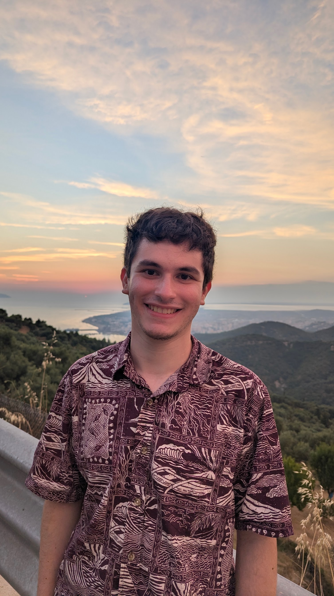

query
Information retrieval
How can AI systems find and use the right information?
I study how to make language models and AI systems more reliable.
Computer Science & Informatics / Atlanta, GA

WILLIAM STERN ↗I’m a first-year PhD student in Computer Science at Emory University, advised by Eugene Agichtein. My research broadly focuses on natural language processing: building robust, reliable AI systems and studying how they work.
I’m a member of the Intelligent Information Access Lab and an associated member of the Emory Language Intelligence (ELI) Lab. Before Emory, I was a data scientist at United Airlines and earned a B.S. in computer science from Florida Institute of Technology.
My interests span the information a model uses, the way it processes that information, and the reliability of its responses.
How can AI systems find and use the right information?
How do language models process information, and why do they behave the way they do?
How can language models and AI agents behave more reliably and safely?
SCHEMATIC ILLUSTRATIONS · NOT EXPERIMENTAL RESULTS
William Stern, Seng Jhing Goh, Nasheen Nur, Patrick J. Aragon, Thomas Mercer, Siddhartha Bhattacharyya, Chiradeep Sen, Van Minh Nguyen
ML4CMH @ AAAINasheen Nur, William Stern, Thomas Mercer, Chiradeep Sen, Siddhartha Bhattacharyya, Victor Tumbiolo, Seng Jhing Goh, et al.
International Conference on Machine Learning and Applications (ICMLA)W. Stern, H. Chang, V. Kobzarenko, D. Mitra
IEEE NSS MIC RTSDWilliam Stern, Haoran Chang, Rostyslav Boutchko, Uttam Shrestha, Grant Gullberg, Youngho Seo, Debasis Mitra
Journal of Nuclear Medicine · Supplement 1Daniel Griessler, Josias Moukpe, Braidan Duffy, Akil Hosang, Blake Janes, Omar Jebari, Kourtnee Fernalld, Erbene de Castro, Humberto Rivera, William Stern, et al.
Conference paperInterested in language models, information retrieval, or reliable AI? I’d love to connect.
William.Stern@emory.edu ↗